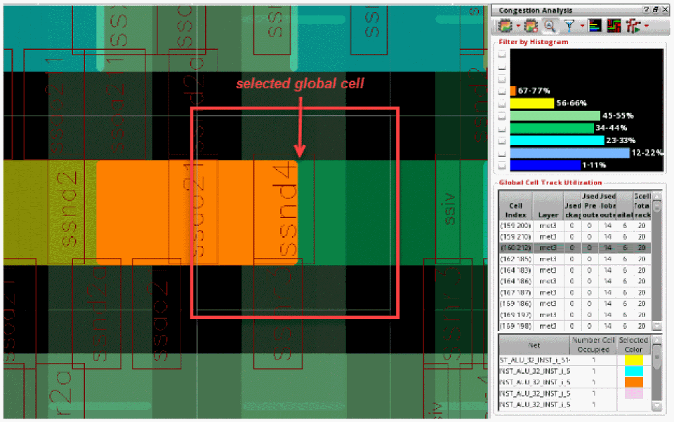
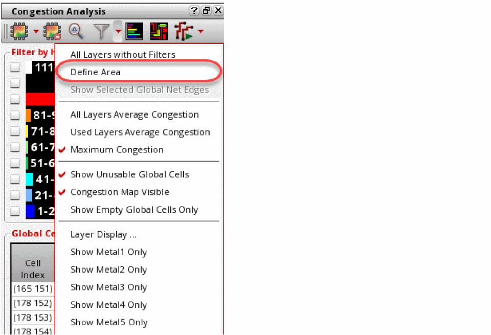
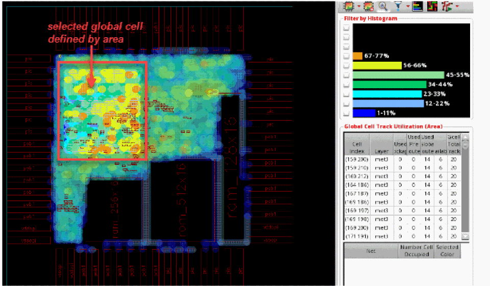

Selecting and Viewing Global Cells
With the help of the global cell track utilization table, you can view the actual congestion metrics used by the global routing engine.
You can use the global cell track utilization table to quickly find the most congested gcells in the design. In addition, explore the objects causing that level of congestion and also view the selected gcell(s) in the heat map by zooming in.
- Run congestion analysis by clicking the Congestion Analysis icon on the toolbar.
-
Select a gcell from the Global Cell Track Utilization table in the Congestion Analysis assistant.
The nets passing through the selected gcell are displayed in the section below the Global Cell Track Utilization table. The heat map is also updated to show the location of the selected gcell. However the selected gcell, in the Global Track Utilization table, appears quite small on the heat map because of the design size. -
To view the selected gcell more precisely, use the Zoom selected Global Cells icon on the Congestion Analysis toolbar.
The following figure shows the enlarged view of the selected gcell in the heat map.
Congestion is calculated based on the capacity and availability of edges on a gcell.
An alternative way to select and view a gcell is using the heat map. You can look for the gcells in the heat map and then manually select the gcells that are required. To do this:
- Click the drop-down arrow next to the Filter Global Cells By icon on the Congestion Analysis toolbar.
-
To select an area of gcells, click Define Area.
 -
Now, select a region on the heat map by clicking a lower-left point and then dragging the pointer to an upper-right point.
The non-selected gcells are dimmed. Also, the histogram and the global cell track utilization table is updated to indicate only the selected gcells.
Related Topics
Sorting the Global Cell Track Utilization Table
Return to top